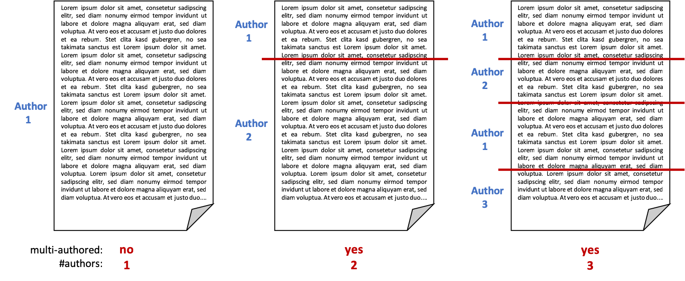

Many approaches have been proposed recently to identify the author of a given document. Thereby, one fact is often silently assumed: i.e., that the given document is indeed written by only author. For a realistic author identification system it is therefore crucial to at first determine whether a document is single- or multiauthored.
To this end, previous PAN editions aimed to analyze multi-authored documents. As it has been shown that it is a hard problem to reliably identify individual authors and their contribtuion within a single document (Author Diarization, 2016; Style Breach Detection, 2017), last year's task substantially relaxed the problem by asking only for binary decision (single- or multi-authored). Considering the promising results achieved by the submitted approaches (see the overview paper for details), we continue last year's task and additionally ask participants to predict the number of involved authors.
Given a document, participants thus should apply intrinsic style analyses to hierarchically answer the following questions:
The following figure illustrates some possible scenarios and the expected output:
Note that it is irrelevant to identify the number of style changes or the specific positions where the authorships change.
Given a document, determine whether it contains style changes or not, i.e., if it was written by a single or multiple authors. If it is written by more than one author, determine the number of involved collaborators.
All documents are provided in English and may contain zero up to arbitrarily many style changes, resulting from arbitrarily many authors.
To develop your algorithms, a data set including corresponding solutions is provided.
Details will be announced soon.
To tackle the problem, you can develop novel approaches, extend existing algorithms from last year's task or adapt approaches from related problems such as intrinsic plagiarism detection or text segmentation. You are also free to additionally evaluate your approaches on last year's training/validation/test dataset (for the number of authors use the corresponding meta data).
Once you finished tuning your approach to achieve satisfying performance on the training corpus, your software will be tested on the evaluation corpus (test data set). You can expect the test data set to be similar to the validation data set, i.e., also based on StackExchange user posts and of similar size as the validation set. During the competition, the evaluation corpus will not be released publicly. Instead, we ask you to submit your software for evaluation at our site as described below.
After the competition, the evaluation corpus will become available including ground truth data. This way, you have all the necessities to evaluate your approach on your own, yet being comparable to those who took part in the competition.
In general, the data structure during the evaluation phase will be similar to that in the training phase, with the exception that the ground truth files are missing.
Details will be announced as soon as the dataset is ready.
The performance of the submitted approaches will be ranked by a combined measure incorporating both the accuracy of distinguishing single- from multi-author documents and the correctness of the predicted number of authors.
Details will be anounced soon.
We ask you to prepare your software so that it can be executed via command line calls. The command shall take as input (i) an absolute path to the directory of the evaluation corpus and (ii) an absolute path to an empty output directory:
mySoftware -i EVALUATION-DIRECTORY -o OUTPUT-DIRECTORY
Within EVALUATION-DIRECTORY, you will find a list of problem instances, i.e., [filename].txt files.
For each problem instance you should produce the solution file [filename].truth in
the OUTPUT-DIRECTORY For instance, you read EVALUATION-DIRECTORY/problem-12.txt,
process it and write your results to OUTPUT-DIRECTORY/problem-12.truth.
You can choose freely among the available programming languages and among the operating systems Microsoft Windows and Ubuntu. We will ask you to deploy your software onto a virtual machine that will be made accessible to you after registration. You will be able to reach the virtual machine via ssh and via remote desktop. More information about how to access the virtual machines can be found in the user guide below:
PAN Virtual Machine User Guide »
Once deployed in your virtual machine, we ask you to access TIRA at www.tira.io, where you can self-evaluate your software on the test data.
Note: By submitting your software you retain full copyrights. You agree to grant us usage rights only for the purpose of the PAN competition. We agree not to share your software with a third party or use it for other purposes than the PAN competition.
We refer you to: